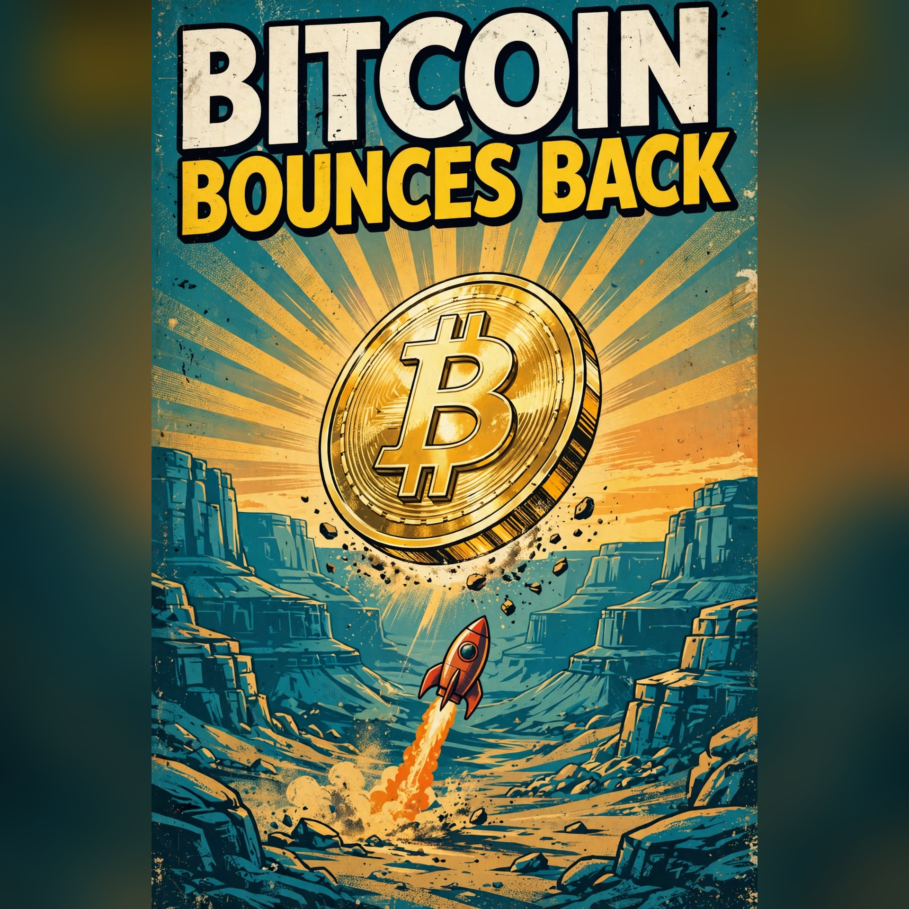
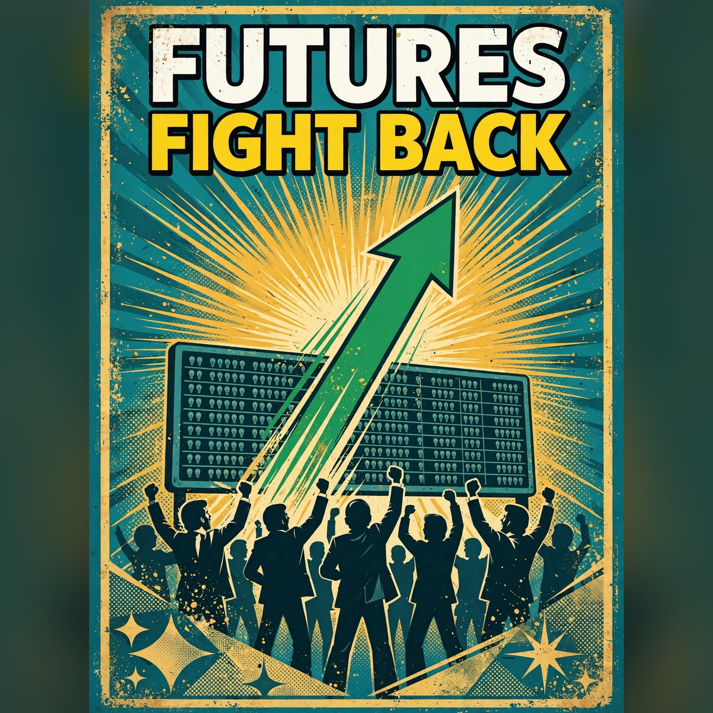
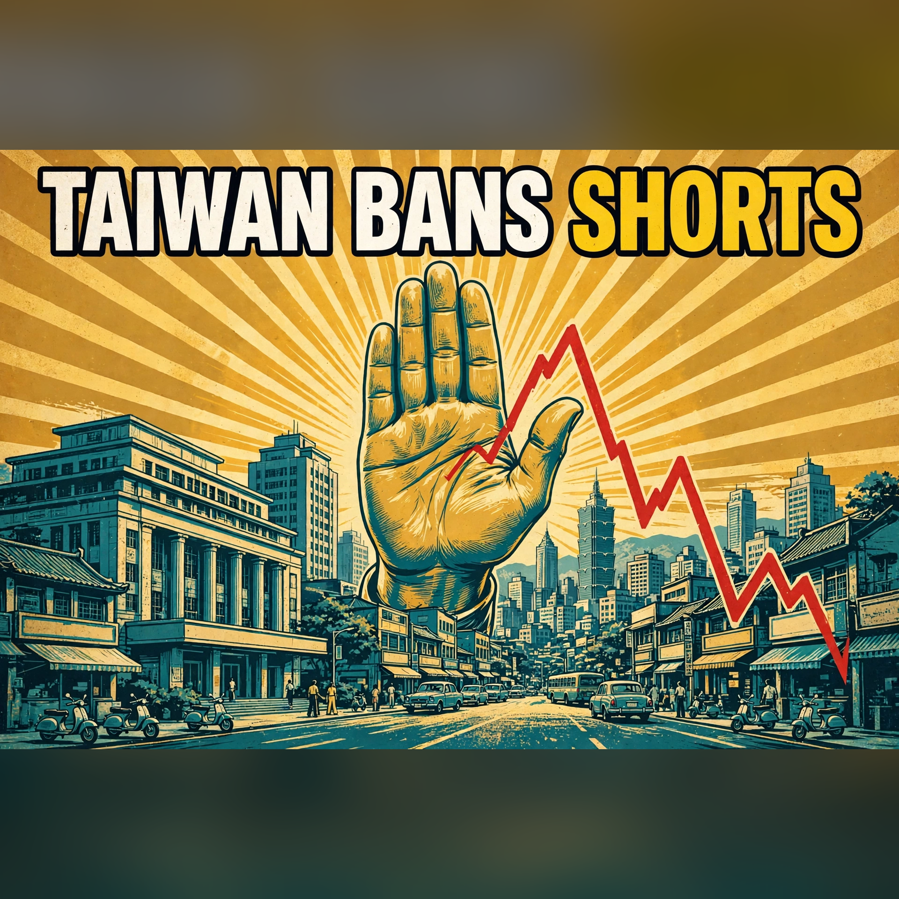
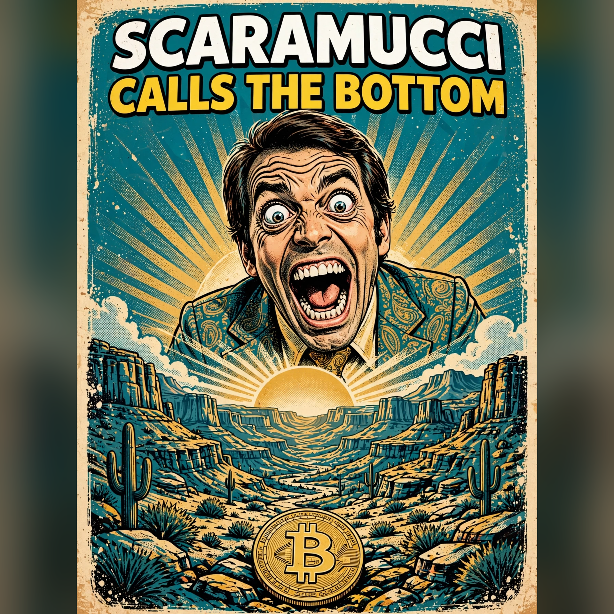

Bitcoin Stories — Monday, Nov 23, 2026

Bitcoin bounced above $61,000 on Sunday after hitting a two-year low of $55,640 over the weekend, peaking at $61,565 before easing back toward $60,400. U.S. spot bitcoin ETFs lost about $1.79 billion last week, the fourth straight week of outflows.
Read the full story →
Nasdaq-100 futures rose about 3% and S&P 500 futures around 2% in Monday's Asian session after Friday's rout, when the Nasdaq Composite plunged 5.3% and the S&P 500 fell 3.7%. The Nasdaq suffered its worst week since March 2020, while the S&P and Dow both confirmed corrections.
Read the full story →
Taiwan banned short selling below the previous session's close across all listed stocks from Monday Nov 23, its third crackdown on bearish bets this month, after the Taiex lost almost 18% last week — its worst weekly drop in 35 years.
Read the full story →President Trump posted on Truth Social that he hopes Nvidia's board rehires Jensen Huang, calling it the best thing for the company and the U.S., while Treasury Secretary Scott Bessent softened his stance, saying Huang is "on the outside now" and leaving the door open.
Read the full story →
Anthony Scaramucci expects Bitcoin to bottom on Wednesday Nov 25, after asking ChatGPT for the expected 2028 halving date and the point 500 days before it. Galaxy Digital CEO Mike Novogratz expects Bitcoin to trade between $60,000 and $75,000 before a breakout or breakdown.
Read the full story →